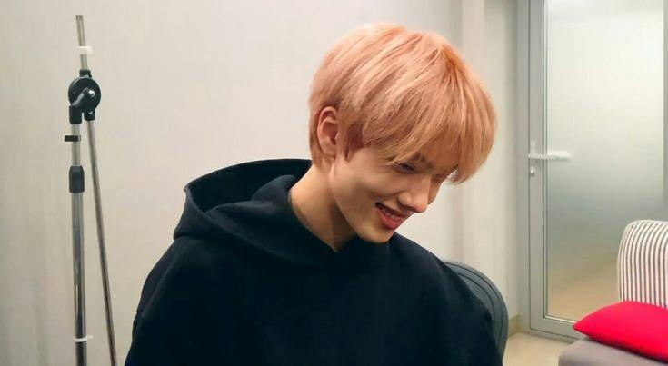
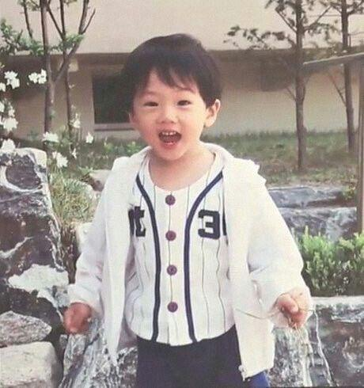

About Jisung ♡

Park Ji-sung atau yang biasa dikenal sebagai Jisung, adalah seorang penyanyi Korea Selatan yang berada di bawah naungan
SM Entertainment. Ia adalah anggota grup vokal laki-laki NCT dan sub-unit NCT Dream. Posisinya di NCT Dream
adalah sebagai main dancer,rapper dan maknae(anggota termuda). Pada tahun 2013, jisung mengikuti audisi dan diterima sebagai trainee
di SM Entertainment. Ditahun yang sama, yaitu tepatnya pada tanggal 17 Desember, jisung diperkenalan ke publik sebagai trainee
dengam mengikuti proyek SM Rookies. Setelah hampir 4 tahun melakukan trainee, akhirnya pada tanggal 25 Agustus 2016 saat ia berusia 14
tahun, jisung memulai debutnya sebagai anggota sub-unit NCT Dream demgan single bertajuk Chewing GUM yang pada saat itu dia masih berusia 14 tahun.
Jisung merupakan kelahiran seoul, korea selatan pada 5 Februari 2022. ia dikenal sangat lihai dalam menari, tang membuatnya menjadi
main dancer di dalam grupnya. Sebelumnya, ia pernah menempuh pendidikan di Mia Elementary School dan tiggal di Busan selama kurang
lebih 4 tahun. Sebelum debut ia pernah muncul di video musik TVXQ U-Know Yunho dalam lagu Champagne. Dan di tahun yang sama, Jisung
muncul di acara Disney Channel Korea The Mickey House Club sebagai Mouseketeer.
Biodata Jisung

Nama Lahir : Park ji-sung (박지성)
Nama Panggung : Jisung (지성)
Nama Latin : Andy
Tanggal Lahir : 5 Februari 2002
Tempat Lahir : Seoul
Kewarganegaraan : Korea Selatan
Zodiak : Aquarius
Posisi di Grup : Dancer, Vocalist, Rapper